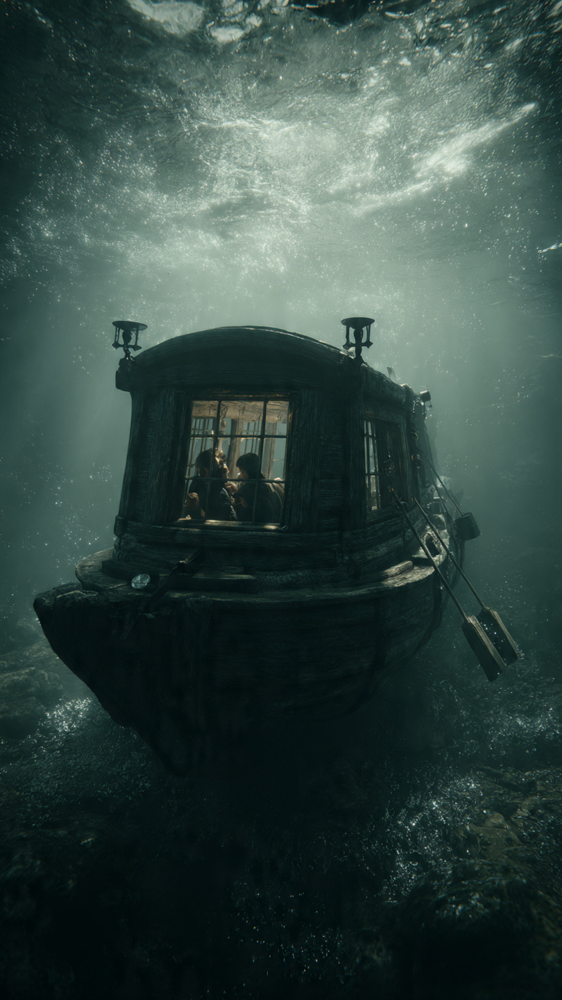

```html
الرجل الذي سبق عصره واخترع غواصة قبل 400 عام | اكتشافات وعلوم
```
في عام 1578، كانت أوروبا تعيش عصرًا مليئًا بالاكتشافات البحرية. كانت السفن الشراعية تجوب المحيطات بحثًا عن طرق تجارية جديدة، وكانت الدول الكبرى تتنافس للسيطرة على البحار، لأن من يملك البحر كان يملك القوة والثروة.
في تلك الأيام، لم يكن أحد يتخيل أن الإنسان قد يتمكن يومًا من الإبحار تحت سطح الماء. كانت فكرة النزول إلى الأعماق تبدو أقرب إلى الخيال منها إلى العلم، فحتى الغواصون لم يكونوا يستطيعون البقاء تحت الماء إلا لدقائق قليلة، ثم يضطرون إلى الصعود لالتقاط أنفاسهم.
لكن بينما كان الجميع ينظر إلى البحر من فوق الأمواج، كان هناك رجل يفكر بطريقة مختلفة تمامًا.
كان يتساءل: لماذا نبقى دائمًا فوق سطح الماء؟ ماذا لو استطعنا الاختفاء تحته؟ ماذا لو أصبحت السفينة قادرة على السير في الأعماق دون أن يراها أحد؟
كان هذا الرجل هو ويليام بورن، البحار الإنجليزي وعالم الرياضيات الذي أمضى سنوات طويلة في دراسة السفن والملاحة. وخلال خدمته في البحرية، شاهد بنفسه المعارك البحرية، ورأى كيف يمكن لسفينة واحدة أن تغيّر مصير حرب كاملة.
ومع مرور الوقت، بدأت فكرة غريبة تسيطر على عقله.
لم يكن يريد أن يبني سفينة أسرع...
بل سفينة تختفي.
في ذلك العصر، لم تكن هناك محركات، ولا بطاريات، ولا معادن متطورة، ولا حتى معرفة دقيقة بضغط الماء في الأعماق. ومع ذلك، لم يمنعه هذا من الجلوس لساعات طويلة يرسم ويحسب ويكتب، محاولًا الوصول إلى تصميم يمكن أن يجعل القارب يغوص ثم يعود إلى السطح مرة أخرى.
كانت فكرة تبدو مستحيلة...
لكن التاريخ أثبت لاحقًا أنها كانت بداية ثورة كاملة في عالم الملاحة.
وبعد سنوات من الدراسة، نشر بورن كتابًا بعنوان Inventions or Devises، عرض فيه واحدة من أغرب الأفكار التي عرفها عصره.
لم يكن الكتاب يتحدث عن سفينة عادية.
بل عن آلة تستطيع تغيير حجمها قليلًا حتى تغوص في الماء، ثم تعود إلى السطح عندما يريد قائدها.
كانت هذه أول مرة يقرأ فيها العلماء شرحًا علميًا لفكرة تشبه الغواصات الحديثة.
لكن ردود الفعل لم تكن كما توقع.
فقد سخر كثيرون من المشروع، وقال بعضهم إن الإنسان خُلق ليبحر فوق الماء، وليس تحته.
أما آخرون، فاعتبروا أن الفكرة لا يمكن تنفيذها أبدًا، لأنها تخالف قوانين الطبيعة كما كانوا يفهمونها في ذلك الزمن.
ورغم كل ذلك...
لم يتراجع ويليام بورن.
بل واصل تطوير أفكاره، مقتنعًا بأن المستقبل سيأتي يومًا ويثبت أن ما يكتبه ليس خيالًا.
وكانت الأيام تخبئ له مفاجأة لم يكن يتوقعها...
📷 الصورة رقم 1
بعد نشر أفكاره، لم يتوقع ويليام بورن أن تتحول رسوماته إلى حديث بين العلماء والبحارة. فمعظم من قرأ الكتاب رأى أن المشروع مستحيل التنفيذ. كانوا ينظرون إلى البحر على أنه عالم لا يرحم، ويعتقدون أن أي قارب يغوص تحته لن يعود أبدًا.
لكن بورن لم يكن يعتمد على الخيال وحده، بل على الحسابات الرياضية. فقد أدرك أن الجسم إذا تغير حجمه مع بقاء وزنه تقريبًا ثابتًا، فإن طريقة طفوه في الماء ستتغير أيضًا. واليوم تُعرف هذه الفكرة بأنها من المبادئ الأساسية التي تعتمد عليها الغواصات الحديثة عند التحكم في خزانات الاتزان.
ومع ذلك، بقيت مشكلة أكبر بلا حل...
كيف سيتنفس من بداخل الغواصة؟
وكيف سيرى طريقه في الظلام؟
وكيف ستتحمل جدرانها ضغط المياه كلما نزلت إلى الأعماق؟
كانت هذه الأسئلة كافية ليقتنع معظم الناس أن المشروع لن يغادر صفحات الكتاب أبدًا.
لكن الأفكار العظيمة لا تموت بسهولة.
انتشرت رسومات بورن بين المهندسين والبحارة، وأصبحت مصدر إلهام لمن جاء بعده. وبعد عقود، بدأ مخترعون في دول مختلفة يحاولون تحويل الحلم إلى حقيقة.
وكان أشهرهم الهولندي كورنيليوس دريبل.
في أوائل القرن السابع عشر، صنع دريبل قاربًا خشبيًا مغطى بالجلد، مزودًا بمجاديف تخرج من فتحات محكمة الإغلاق. لم يكن يشبه الغواصات الحديثة، لكنه استطاع الغوص لمسافات قصيرة في نهر التايمز أمام عدد من المسؤولين.
كانت تلك اللحظة صادمة.
لأول مرة يرى الناس قاربًا يختفي تحت الماء ثم يعود إلى السطح.
ورغم أن الغواصة كانت بدائية جدًا، فإنها أثبتت أن الفكرة التي سخر منها الكثيرون لم تكن مستحيلة.
بدأت الحكومات تهتم بالأمر، لأنها أدركت أن آلة تستطيع الاقتراب من سفن العدو دون أن تُرى قد تغيّر شكل الحروب البحرية بالكامل.
ومع مرور السنوات، حاول مخترعون آخرون تطوير التصميم.
ظهرت نماذج تعمل بالطاقة البشرية، ثم أخرى تستخدم الهواء المضغوط، لكن جميعها كانت تعاني من مشكلة واحدة...
مدة البقاء تحت الماء.
فكلما نفد الهواء، اضطر الطاقم إلى الصعود فورًا.
ومع ذلك، لم يتوقف التطور.
كانت كل تجربة، حتى لو انتهت بالفشل، تضيف فكرة جديدة، أو تحل مشكلة قديمة، أو تمهد الطريق لمن يأتي بعدها.
ولو عاد ويليام بورن إلى الحياة في تلك الفترة، لرأى أن الحلم الذي رسمه على الورق بدأ يتحول ببطء إلى حقيقة.
لكنه لم يكن يعلم أن المستقبل سيحمل للغواصات دورًا أكبر بكثير مما تخيله.
فبعد قرون قليلة، لن تستخدم فقط لاستكشاف أعماق البحار...
بل ستصبح من أقوى الأسلحة وأكثرها سرية في العالم.
📷 الصورة رقم 2

مرّت القرون، وتطورت التكنولوجيا بسرعة لم يكن ويليام بورن ليتخيلها. ففي القرن التاسع عشر ظهرت غواصات أكثر قوة، تعمل بمحركات بخارية ثم بمحركات كهربائية، وأصبحت قادرة على الغوص لفترات أطول وقطع مسافات أكبر.
لكن التحول الحقيقي جاء في القرن العشرين.
فمع اندلاع الحروب العالمية، أدركت الدول الكبرى أن الغواصات لم تعد مجرد اختراع غريب، بل أصبحت سلاحًا قادرًا على تغيير موازين القوى. كانت تختبئ في أعماق البحر لساعات طويلة، ثم تظهر فجأة لتهاجم السفن قبل أن تختفي مرة أخرى.
وللمرة الأولى في التاريخ، أصبح الخطر قد يأتي من مكان لا يراه أحد.
ومع تطور العلم، ظهرت الغواصات التي تعمل بالطاقة النووية، وهي قادرة على البقاء تحت الماء لعدة أشهر دون الحاجة إلى الصعود باستمرار، لأن مفاعلاتها تولد الطاقة بشكل متواصل. كما أصبحت تحمل أجهزة سونار متطورة تستطيع اكتشاف الأجسام في أعماق البحار، وتصل إلى أعماق لم يكن الإنسان يحلم بالوصول إليها في الماضي.
لكن الغواصات لم تُستخدم في الحروب فقط.
فقد لعبت دورًا مهمًا في خدمة العلم. فمن خلالها اكتشف الباحثون كائنات بحرية تعيش في ظلام كامل وعلى أعماق تتجاوز آلاف الأمتار، ودرسوا البراكين الموجودة في قاع المحيط، وصوروا حطام سفن تاريخية مثل تيتانيك، ووصلوا إلى أماكن لم تطأها قدم إنسان من قبل.
كل هذه الإنجازات بدأت بفكرة رسمها رجل عاش قبل أكثر من أربعة قرون.
لم يمتلك بورن مصنعًا ضخمًا، ولم يرَ غواصة حقيقية بعينيه، ولم يشتهر في حياته كما اشتهر كثير من المخترعين.
ومع ذلك، فإن المؤرخين ينظرون إليه اليوم باعتباره من أوائل من وضعوا الأساس العلمي لفكرة الغواصة، وهي الفكرة التي ألهمت من جاء بعده حتى أصبحت واقعًا.
وهنا تكمن واحدة من أهم الدروس في تاريخ العلم.
فليس كل مخترع يرى اختراعه ينجح في حياته.
أحيانًا يحتاج العالم إلى عشرات أو حتى مئات السنين حتى تصبح الفكرة قابلة للتنفيذ.
وربما لهذا السبب تُعد قصة ويليام بورن مثالًا حيًا على أن الأفكار العظيمة قد تسبق عصرها بكثير.
لقد سخر البعض من رسوماته، واعتبرها آخرون مجرد خيال.
لكن الزمن أثبت أن الخيال المدعوم بالعلم قد يصبح حقيقة.
ولو لم يجرؤ ذلك البحار الإنجليزي على طرح سؤاله البسيط:
"لماذا لا تسير السفينة تحت الماء؟"
ربما تأخر واحد من أهم اختراعات البشرية سنوات طويلة.
وهكذا، بقي اسم ويليام بورن حاضرًا في كتب تاريخ العلوم، ليس لأنه بنى أول غواصة بنفسه، بل لأنه كان من أوائل من تجرأوا على تخيلها بطريقة علمية، قبل أن يحولها الآخرون إلى واقع غيّر العالم.